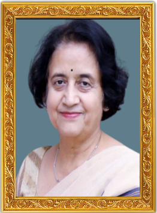

<div class="aboutpage text-white bg-black">
    <div class="container p-5">
        <div class="block1 d-flex flex-column mb-5 ">
            <h2 class="text-center">ABOUT PYREXIA 3.0</h2>
            <p>PYREXIA 3.0 : The third and most ambitious
                rendition of the annual socio-cultural and sports
                fest of AIIMS Rishikesh promises to provide a
                week of unparalleled excitement and joy. Along
                the banks of the peaceful Ganges, onlooking the
                Himalayas on the horizon is a festival like no
                other. The best of both worlds - Pyrexia is the
                perfect blend of grand galas and the scenic
                beauty of this holy town.</p>
            <p>From cheering on your friends in cut-throat
                competitions to swaying your hands in colourful
                concerts, Pyrexia offers to entertain and enable
                students from all over the country to participate
                in a vast range of activities. So clear up your
                September schedule, and we'll see you at one of
                the biggest medical fests in India !</p>
        </div>
        <div class="block2 d-flex flex-row-reverse gap-2">
            <div class="imgholder">
                
            </div>
            <div class="content">
                <h2>ABOUT AIIMS RISHIKESH</h2>
            <p> Situated by the banks of the Holy Ganges, All
                India Institute of Medical Science, Rishikesh is an
                institute which continues to provide excellent
                tertiary patient care, not only in treating patients
                but also in imparting knowledge to others. AIIMS
                Rishikesh functions as a ‘Vishwavidalya’ which
                implies, ‘Learn from the world and also teach the
                world.’ We also intend to provide our experiences
                to upgrade local medical colleges and district
                hospitals, so that others grow with us as well.</p>
            <p>Our institute commenced IPD services with a
                200-bedded facility. We have grown rapidly with
                an enormous escalation in services with a current
                bed of 1060. AIIMS Rishikesh is fully equipped
                with skilled personnel facilities for safe definitive
                care with a firm belief in the principles of 4As,
                i.e., Availability, Affability, Ability and
                Affordability. With this, we wish to extend
                ourselves and compete with the best in the world.</p>
            </div>
            
        </div>
        <hr>
      
        <div class="director-desk d-flex gap-4 p-3 text-white mb-5">
            <div class="imagepart d-flex flex-column justify-content-center">
                
                <h5 class="text-center mt-4 mb-2 fw-bold ">Prof.  Meenu Singh</h5>
            </div>
            <div class="contentpart">
                <h2 class="fw-bold">Message From the Director's Desk</h2>
                <hr>
            <p>On behalf of AIIMS Rishikesh, it is my honor and privilege to
                welcome you all to
                "PYREXIA," our annual sociocultural and sports fest. As the
                Director of this esteemed
                institution, I am delighted to witness the energy and enthusiasm
                that this festival
                brings to our campus each year. PYREXIA-2023 is a celebration of
                creativity, talent,
                and diversity, where students from all walks of life come
                together to showcase their
                skills and passion.
            </p>
            <p>
                It is an event that exemplifies the spirit of unity and fosters
                a sense of camaraderie
                among our student community.
                This fest is not just about competitions and performances; it is
                about nurturing
                talent, exploring new horizons, and creating lasting memories.
                It provides a platform
                for our students to express themselves, discover their
                strengths, and unleash their
                potential.
            </p>
            <p>I extend my heartfelt gratitude to all our sponsors, partners,
                and supporters who
                have joined hands with us to make PYREXIA-2023 a resounding
                success. Your belief
                in the vision of AIIMS Rishikesh and commitment to empowering
                our students is truly
                commendable. To all our participants, I encourage you to seize
                this opportunity to
                learn, grow, and make the most of this enriching experience.
                Embrace the spirit of
                healthy competition, engage in meaningful interactions, and
                cherish every moment
                of this fest.</p>
            <p>
                I extend my best wishes to all and look forward to witnessing
                the magic of PYREXIA
                unfold before our eyes.
            </p>
            </div>         
        </div>

        <div class="dean-desk d-flex flex-row-reverse gap-4 p-3 text-white mb-5 mt-5">
            <div class="imagepart d-flex flex-column justify-content-center">
                
                <h5 class="text-center mt-4 mb-2 fw-bold ">Prof. Jaya Chaturvedi </h5>
            </div>
            <div class="contentpart">
                <h2 class="fw-bold">Message From the Dean's Desk</h2>
                <hr>
            <p>Greetings, participants of Pyrexia! As the dean of this esteemed institution, I'm thrilled to welcome you to our intercollege fest. Pyrexia is not just an event; it's a celebration of knowledge, talent, and collaboration. Together, let's create an unforgettable experience that showcases the best of what our colleges have to offer. Enjoy the festivities and make lasting memories. Let the fever of excitement and creativity sweep over you!
            </p>
            </div>         
        </div>
    </div>
</div>
